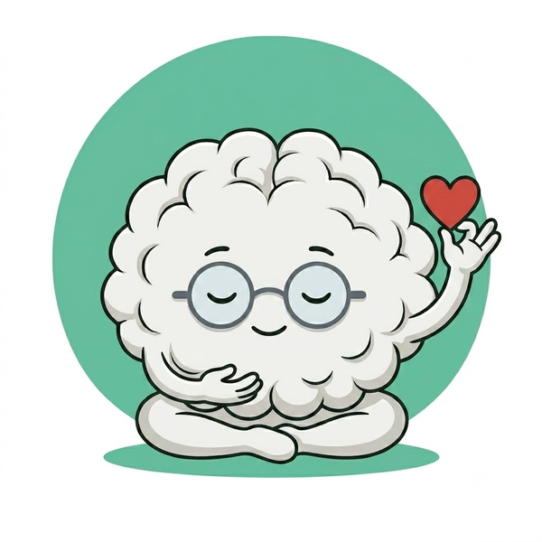

KLARTEXT
☰
✕
💬 KlarApp
📤 Weiterleitungen
📋 To-do-Liste
🚒 Feuerwehrkarten
📝 Notizblock
📓 Tagesjournal
📔 Unser Buch
📓 Workbook
📖 Lernhandbuch
📕 Fachbuch
🔗 Portale
📥 Downloads
🎮 Spiele
🔍 Suche
🚪 Logout
⚠️ Diese mobile Ansicht ist für INGRA optimiert. Für TK/Trainer nutze bitte die
Desktop-Version
.
🔍
Barometer
🌡️
Kind-Barometer
🌡️
INGRA-Barometer
Schnellzugriff
💬
KlarApp
0
📋
To-do-Liste
📤
Weiterleitungen
0
📝
Notizblock
📓
Tagesjournal
📔
Unser Buch
🚒
Feuerwehrkarten
🧰 M3 · Alle 20 Werkzeugkarten
Tools
Krankmeldung
Urlaub
Zeitkonto
Vertretungsassistent
🚒 Feuerwehrkarten · Notfall
⚡
Akute Eskalation
🔇
Shutdown
😰
Panikattacke
⚠️
Fremdgefährdung
🩹
Selbstverletzung
🏃
Weglaufen / Flucht
🌫️
Dissoziation
🌋
Meltdown
🧰 M3 · Alle 20 Werkzeugkarten
📚 Alle Module öffnen
M0
M1
M2
M3
M4
M5
M6
M7
M8
Humor
Kinderkarten
FK
KLARTEXT
Klar. Warm. Menschlich.
Mentoring-System

🌡️ INGRA
🌡️ Kind
🃏 Joker
👩 Über mich
🗂️ TK-Bereich
⬅ Logout
🏠 Dashboard
💬 KLARapp
0
📤 Weiterleitungen
0
📋 To-do-Liste
🚒 Feuerwehrkarten
📝 Notizblock
📘 Tagesjournal
📔 Unser Buch
🔗 Portale
🎮 Spiele
🎯
Sofort-Zugriff · Modul 3
Was tue ich jetzt?
8 Situationen · 12 Werkzeuge · direkt im Unterricht
›
🧒 Kind-Karten
⏱️ Tools
📥 Downloads
🔍
Modul:
M0
M1
M2
M3
M4
M5
M6
M7
M8
LK
TK
FK
Bereich:
📋 Alle
🚒 Feuerwehr
🧒 Kinder (Kategorie)
⏱️ Tools
🧪
Beta-Testphase · bis 07.07.2026
Danke fürs Testen! Dein Feedback macht KLARTEXT besser.
✍️ Feedback geben
📲
Tipp: Als App installieren
Du nutzt KLARTEXT gerade im Browser. Installiere es auf deinem Homescreen — startet wie eine echte App, ohne Adressleiste.
So geht's →
✕
📲 App installieren
✕
🍎 iPhone / iPad (Safari)
1. Link in
Safari
öffnen (nicht Chrome)
2. Unten auf das
Teilen-Symbol
↑ tippen
3.
„Zum Home-Bildschirm"
wählen
4. Namen bestätigen →
„Hinzufügen"
🤖 Android (Chrome)
1. Link in
Chrome
öffnen
2. Oben rechts
drei Punkte
⋮ tippen
3.
„App installieren"
wählen
4. Bestätigen
0
Einträge
▼
⭐ Feedback
Deine Rückmeldung zählt
⭐
Feedback geben
Deine Rückmeldung macht KLARTEXT besser
⭐ Feedback geben
📊
Feedback Admin
Alle Rückmeldungen einsehen und auswerten
📊 Admin-Ansicht
▼
📚 Lernmaterialien
Workbook · Lernpfad · Fachbuch · Glossar
📓
✏️
Workbook
Reflexion · Aufgaben · Vertiefung
Lernmaterial
📖
📚
Lernhandbuch
Alle Inhalte zum Nachlesen · Zur Vertiefung
Optional
LP
🗺️
Mein Lernpfad
8 Wochen Basis · 4 Wochen Erweiterung · Fortschritt
📑
📑
Quellenverzeichnis
Wissenschaftliche Nachweise
Nachschlagen
✨ Neu
Fachbuch
📕
Fachbuch Schulbegleitung
12 Kapitel + 5 Vertiefungskapitel · Fallbeispiele · Trainingsmodule
Vertiefung
Glossar
🔤
Glossar
64 Fachbegriffe · A–Ü
Nachschlagen
✨ Neu
📖
🧭
So funktioniert KLARTEXT
Kurze Übersicht über das ganze System
Hilfe
Downloads
📥
Download-Zentrale öffnen
INGRA · Eltern · Lehrkraft · TK · Kinder · Anti-Mobbing — alle Formulare an einem Ort
→ Alle 20+ Formulare
📚 Bücher · E-Learning · Lernmaterialien
E-Learning · Handbuch · Workbook · Trainerkurs
▼
Über mich
👩
Über Anja Jolk
Profil · Qualifikationen · Kontakt
Über mich
Impressum
⚖️
Impressum
Rechtliche Angaben
Rechtliches
Trainer
🎓
Trainer-Ausbildung
Selbst KLARTEXT-Trainer werden
Ausbildung
Curriculum
📋
Trainer-Leitfaden
15-Wochen-Curriculum für Trainer
Ausbildung
Handbuch
📘
Trainerhandbuch
Didaktik · Methoden · Gruppendynamik · Feedback
Nachschlagen
Zertifikat
🏆
E-Learning-Zertifikat
Abschlussnachweis E-Learning-Kurs
Zertifikat
Zertifikat
🎖️
Präsenzkurs-Zertifikat
Abschlussnachweis Präsenzkurs
Zertifikat
Glossar
🔤
Glossar
64 Fachbegriffe · A–Ü
Nachschlagen
✨ Neu
📖
🧭
So funktioniert KLARTEXT
Kurze Übersicht über das ganze System
Hilfe
▼
M0 · Systemelemente
Grundlagen · Das Fundament
Modul öffnen →
M0-00
🔗
Systemelemente
Barometer · KLAR · Joker · Brainy
Überblick
M0-01
✅
Selbstcheck Haltung
Ehrliche Standortbestimmung
Formular
M0-02
🔄
Rollenreflexion
Meine Rolle klar halten
Formular
▼
M1 · Recht & Rolle
10 Karten · GS · FS · WF
Modul öffnen →
M1-01
⚖️
Rechtliche Grundlagen
SGB IX · Hilfeplan · Eingliederungshilfe
Recht
M1-02
✅
Aufgaben von INGRA
Was dazu gehört — was nicht
Rolle
M1-03
🔒
Schweigepflicht & Datenschutz
Was bleibt vertraulich
Datenschutz
M1-04
👁️
Aufsichtspflicht
Rahmen und Grenzen
Recht
M1-05
🚨
Meldewege & § 8a
Kindeswohlgefährdung erkennen
Schutz
M1-06
🔗
Zusammenarbeit im System
Alle Beteiligten
Teamwork
M1-07
📋
Hilfeplan & Verlängerung
Fristen · Vorbereitung
Hilfeplan
Übersicht
📚
Recht & Rolle · 12 Karten
Rechtliche Grundlagen · Aufgaben · Grenzen
Modul
↓ DL
📝
Rechts-Notizblatt
Offene Fragen dokumentieren
Formular
↓ DL
🔒
Datenschutz-Basischeck
DSGVO im Schulalltag
Formular
▼
M2 · Kinder verstehen
42 Karten · GS · FS · WF
M2-01
📈
Entwicklungsstufen
3 bis 14 Jahre
Grundlage
M2-02
⚖️
Regulation
Beruhigen & Co-Regulation
Kern
M2-03
⚡
Stressreaktionen
Körper im Alarm-Modus
Neurobiologie
M2-04
🏃
4 Stressmodi
Fight · Flight · Freeze · Fawn
Zentralkarte
M2-05
🌀
Trauma-Basics
Verstehen ohne Diagnose
Neurobiologie
M2-06
❤️
Bindung & Beziehung
Beziehung vor Inhalt
Fundament
M2-07
🧩
Neurodivergenz
Anders – nicht weniger
Überblick
M2-08
🎯
ADHS
Kann gerade nicht anders
Neurodivergenz
M2-09
🔵
Autismus
Anderer Wahrnehmungsstil
Neurodivergenz
M2-10
😊
Emotionale Entwicklung
Gefühle lernt man durch Erleben
Entwicklung
M2-11
🛑
Impulskontrolle
Wächst mit dem Gehirn
Entwicklung
M2-12
😤
Frustrationstoleranz
Mit Begleitung aushalten
Entwicklung
M2-13
💪
Selbstwirksamkeit
Ich kann etwas bewegen
Motivation
M2-14
🔥
Motivation
Von innen, nicht von außen
Motivation
M2-15
🚧
Lernblockaden
Blockiert – nicht faul
Lernen
M2-16
📉
Überforderung
Sieht manchmal wie Faulheit aus
Lernen
M2-17
📊
Unterforderung
Unsichtbar, aber real
Lernen
M2-18
👀
Körpersprache lesen
Kinder sprechen mit dem Körper
Beobachtung
M2-19
🔍
Signale erkennen
Früh hinschauen, früh helfen
Beobachtung
M2-20
🕊️
Deeskalation
Erst beruhigen, dann reden
Intervention
M2-21
🔄
Übergänge begleiten
Umschalten kostet Energie
Alltag
M2-22
⏸️
Pausen & Erholung
Pause ist Lernzeit
Alltag
M2-23
🤲
Beziehungsgestaltung
Die Basis für alles
Abschluss
M2-24
🍼
FASD
Alkoholbelastete Familien
Neurobiologie
M2-25
🩸
Diabetes Typ 1
Unterzucker erkennen
Medizin
M2-26
⚡
Epilepsie
Anfall erkennen & handeln
Medizin
M2-27
🤫
Selektiver Mutismus
Kann sprechen - aber nicht hier
Angst
M2-28
😨
Angststörungen
Mehr als Schüchternheit
Emotion
M2-29
📈
Entwicklungsverzögerungen
Langsamer – nicht weniger
Entwicklung
M2-30
❤️
Bindungsstörungen
Wenn Nähe nicht sicher ist
Bindung
M2-31
🔗
Bindungstrauma & Pflegekinder
Bindungslogik · Loyalitätskonflikte
Spezial
M2-32
🏛️
Pflegekinder & Jugendhilfe-System
Systemsprünge · Helfervielfalt
Spezial
M2-33
🛡️
Hochkonflikt-Eltern & SB-Schutz
Grenzen · Schutz · Kommunikation
Spezial
M2-34
🌿
Essstörungen – Grundlagen
Erkennen · Dokumentieren · Abgrenzen
Spezial
M2-42
🔒
Sex. Missbrauch — Erkennen
Warnsignale · Was INGRA nicht darf
M2-36
🔒
Sex. Missbrauch — Handeln
Meldekette · Dokumentation · Schritte
M2-37
🔒
Sex. Missbrauch — Schutz
Eigener Schutz · Prävention · § 8a
M2-38
👁️
Sehbehinderung — Grundlagen
Formen · Alltag · Orientierung
M2-39
👁️
Sehbehinderung — Praxis
Unterricht · Selbstständigkeit · MSD
M2-40
👂
Gehörlosigkeit — Grundlagen
DGS · CI · Hörerschöpfung
M2-41
👂
Gehörlosigkeit — Praxis
Kommunikation · Sitzplatz · Hörgerät
✨ Neu
M2-42
🎓
ADHS & Ausbildungsreife
Übergang Schule → Beruf verstehen
Übergang
▼
🎯 M3 · Was tue ich jetzt?
20 Karten · GS · FS · WF
M3-Dashboard →
M3 · 20
🧰
Alle 20 Werkzeugkarten
Barometer · KLAR · Joker · Brainy · Timer · u.v.m.
Modul-Dashboard
M3-01
🌡️
Barometer
Inneren Zustand zeigen
Emotion
🃏
🃏
Joker-Karte
Sofort-Hilfe · Immer griffbereit
Werkzeug
✨ Neu
🖨️
🃏
Joker-Karte (Druck)
8 Karten zum Ausschneiden
Material
▼
M4 · Kommunikation
16 Karten · GS · FS · WF
M4-01
💬
Grundprinzipien
Haltung & Gewohnheiten
Grundlage
M4-02
🗣️
Ich-Botschaften
Ohne Vorwurf sprechen
Technik
M4-03
✂️
Klarheit & Kürze
Weniger ist mehr
Technik
M4-04
🌍
DAZ-freundlich
Einfache Sprache für alle
Inklusion
M4-05
🧒
Mit Kindern sprechen
Auf Augenhöhe
Praxis
M4-06
🕊️
Deeskalierende Sprache
Erst beruhigen
Krise
M4-07
🧍
Nonverbal
Was der Körper sagt
Körper
M4-08
😄
Humor
Wann er verbindet
Beziehung
M4-09
📚
Mit Lehrkraft sprechen
Professionell & klar
Team
M4-10
👨👩👧
Mit Eltern sprechen
Klar & wertschätzend
Team
M4-11
💡
Feedback geben
Beobachtung → Wunsch
Technik
M4-12
🤝
Feedback annehmen
Zuhören ohne Abwehr
Technik
M4-13
⚡
Konfliktgespräche
Lösung, nicht Recht
Konflikt
M4-14
🛑
Grenzen setzen
Klar & ohne Entschuldigung
Schutz
M4-15
💬
Schwierige Gespräche
5-Schritte-Ablauf
Abschluss
M4-16
🌍
Migrantische Eltern
Elterngespräche · Kultur
Neu
▼
M5 · Dokumentation
13 Karten · GS · FS · WF
M5-01
📋
Tagesdokumentation
Kurz, sachlich, zeitnah
Grundlage
M5-02
📆
Wochenreflexion
Was war – was kommt
Reflexion
M5-03
📊
Monatsbericht
Entwicklungen sichtbar machen
Bericht
M5-04
🔁
Übergabeprotokolle
Was muss weitergegeben werden
Übergabe
M5-05
👁️
Beobachtungsbögen
Neutral statt wertend
Beobachtung
M5-06
🎯
Zielvereinbarungen
Richtung für die Begleitung
Planung
M5-07
📁
Förderpläne
Kompass der Begleitung
Planung
M5-08
📝
Gesprächsnotizen
Vereinbarungen festhalten
Protokoll
M5-09
☑️
Checklisten
Abläufe sicher machen
Alltag
M5-10
🔒
Datenschutz
DSGVO in der Dokumentation
Recht
M5-11
⚖️
Do's & Don'ts
Was erlaubt ist – was nicht
Regeln
M5-12
🚒
Doku in Krisen
5-Schritte-Ablauf
Abschluss
✨ Neu
M5-13
🧰
ADHS im Übergang
5 Werkzeuge für INGRA
Übergang
▼
M6 · Krise & Mobbing
19 Karten · GS · FS · WF
M6-01
🔍
Mobbing erkennen
Muster – nicht Momente
Grundlage
M6-02
🛡️
Was tue ich jetzt?
INGRAs Rolle bei Mobbing
Rollenklarheit
M6-03
📱
Cybermobbing
Digital ist real
Digital
M6-04
👥
Mobbing im Klassenverband
Rollen im Gruppe
Gruppenebene
M6-05
🔄
Täter-Opfer-Umkehr
Wenn das Opfer als Täter gilt
Dynamik
M6-06
🏫
Mobbing & Lehrkraft
Koordiniert handeln
Zusammenarbeit
M6-07
👨👩👧
Elterngespräch bei Mobbing
Rolle & Vorbereitung
Kommunikation
M6-08
📱
Digitale Spuren sichern
Beweise & Schutz
Cybermobbing
M6-09
🛡️
Wenn INGRA betroffen ist
Selbstschutz & Grenzen
Abschluss
M6-10
🌱
Prävention im Klassenzimmer
Bevor Mobbing entsteht
Prävention
M6-11
👥
Gruppenintervention
Step by Step
Intervention
M6-12
🤝
No-Blame-Approach
Lösung statt Strafe
Methode
M6-13
🛡️
Verteidiger stärken
Peers aktivieren
Prävention
M6-14
👨👩👧
Eltern einbeziehen
Kommunikation
Eltern
M6-15
🌱
Nachsorge
Nach dem Mobbing
Abschluss
✨ Neu
📖
🦸
Brainy-Geschichtenkarten
30 Karten zum Mobbing-Thema
Material
✨ Neu
📥
🟥
Krisenkarte (Druck)
Was tun bei Mobbing? · 8 Schritte zum Ausdrucken
Material
✨ Neu
📥
🟧
Erkennen — Kurzcheck (Druck)
Kompakt zu M6-01 · zum Ausdrucken
Material
✨ Neu
📥
🟦
Spuren sichern (Druck)
Kompakt zu M6-08 · zum Ausdrucken
Material
▼
M7 · Praxissituationen (20 Fälle)
20 Karten · GS · FS · WF
M7-01
🌅
Schwieriger Start
Erst ankommen, dann lernen
Alltag
M7-02
🔄
Übergänge
Rituale schaffen Sicherheit
Alltag
M7-03
🚫
Arbeitsverweigerung
Hinter Trotz steckt Angst
Lernen
M7-04
📉
Überforderung
Weniger ist mehr
Lernen
M7-05
📈
Unterforderung
Herausforderung ist Respekt
Lernen
M7-06
⚡
Konflikte Mitschüler
5-Schritte-Ablauf
Sozial
M7-07
😤
Wutanfälle
Erst Sturm, dann Gespräch
Krise
M7-08
🤫
Rückzug & Schweigen
Präsenz ohne Druck
Emotion
M7-09
😢
Weinen
Gefühle dürfen sein
Emotion
M7-10
😨
Angst & Unsicherheit
Sicherheit vor Erklärung
Emotion
M7-11
💥
Impulsdurchbrüche
Ursachen, nicht Strafen
Krise
M7-12
🏃
Stressmodi
4 Modi erkennen & reagieren
Zentralkarte
M7-13
❓
Nicht verstehen
An der Erklärung liegen
Lernen
M7-14
🎯
Fokus verlieren
Sanft zurückholen
Lernen
M7-15
📝
Prüfungsstress
Ruhe ist die beste Vorbereitung
Lernen
M7-16
👥
Gruppenarbeit
Im Hintergrund präsent
Sozial
M7-17
🔥
Eskalation
Sicherheit zuerst
Krise
M7-18
🔷
Grenzen setzen
Klar und ruhig
Schutz
M7-19
🏫
Konflikte Lehrkraft
Professionell bleiben
Team
M7-20
👨👩👧
Konflikte Eltern
5-Schritte-Gespräch
Abschluss
▼
M8 · Selbstfürsorge
19 Karten · GS · FS · WF
M8-01
🌱
Warum Selbstfürsorge
Professionelle Pflicht, kein Luxus
Grundlage
M8-02
🔴
Stresssignale erkennen
Früh erkennen, früh handeln
Selbst
M8-03
⚡
Sofort-Strategien
Kleine Tools, große Wirkung
Akut
M8-04
🔷
Grenzen für dich
Ja zu dir selbst
Schutz
M8-05
☕
Pausen & Erholung
Erholung braucht Bewusstsein
Alltag
M8-06
🎭
Rolle klar halten
Klarheit ist Stärke
Rolle
M8-07
⚖️
Neutralität
Alle Perspektiven ernst nehmen
Haltung
M8-08
💬
Umgang mit Kritik
Professionell reagieren
Kommunikation
M8-09
🔁
Selbstreflexion
Muster erkennen und verändern
Entwicklung
M8-10
🤝
Zusammenarbeit
Gemeinsam tragen
Team
M8-11
🗣️
Kommunikation Kollegium
Wie wir miteinander sprechen
Team
M8-12
⛈️
Belastung im Team
Offen benennen macht stark
Abschluss
✨ Neu
M8-13
😌
3 Min. Gelassenheit
Drei Orte · drei Mini-Pausen
Selbstfürsorge
✨ Neu
M8-14
😂
Lachyoga
90 Sek. · Im Lehrerzimmer machbar
Selbstfürsorge
✨ Neu
M8-15
🦉
Innerer Kritiker
Gib ihm eine Gestalt — und Feierabend
Selbstfürsorge
✨ Neu
M8-16
🎯
Selbstfürsorge-Bingo
16 kleine Dinge für die Woche
Selbstfürsorge
✨ Neu
M8-17
🧳
Humor-Notfallkoffer
10 Sätze für den Geduldsfaden
Selbstfürsorge
✨ Neu
M8-18
🍱
Mittagspause-Challenge
5 echte Erholungs-Ideen, ohne Handy
Selbstfürsorge
✨ Neu
M8-19
🐢
Wie eine Schildkröte
Bewusst verlangsamen — mit Augenzwinkern
Selbstfürsorge
▼
M-Humor · Zusatzmodul
8 Karten · GS · FS · WF
MH-01
📋
Humor-Regeln
5 Grundregeln
Grundlage
MH-02
🚧
Humor-Grenzen
Was immer gilt
Grenzen
MH-03
⚠️
Fehlerquellen
6 typische Fallen
Reflexion
MH-04
🛑
Notbremse
Wenn es nicht passte
Korrektur
MH-05
⚡
5 Mikro-Interventionen
Klein, schnell, verbindend
Praxis
MH-06
✅
Checkliste
Vor und nach dem Einsatz
Check
MH-07
🌡️
Barometer-Matrix
Wann passt Humor?
Zentralkarte
MH-08
💬
Praxis-Beispiele
Was passt – was nicht
Abschluss
▼
🏫 Für Lehrkräfte
16 Karten · Zusammenarbeit mit INGRA · Weitergeben
🏫
📘
Für Lehrkräfte – zum Weitergeben
17 Karten · inkl. ADHS & Ausbildungsreife
Lehrkraft
▼
🗂️ Teamkoordination
TK-Bereich · Einstieg
TK
🗂️
TK-Bereich
Übersicht · Module · Handlungskarten
Einstieg
FM · Neu
🗂️
Fallmanagement
Fallakte · Risiko · Maßnahmen · Verlauf
TK-Modul
TK-01–19
📋
Handlungskarten
Team · Kind & Familie · System · § 8a
TK-Modul
VA · ℹ
🔄
Vertretungsassistent
Anleitung · Schritt-für-Schritt · Kurzanleitung
TK-Modul
▼
🎯 TK-Recruiting
8 Prozessschritte · Anleitung
TK-R · 01
💬
Gespräch
Erstgespräch vorbereiten & führen
Recruiting
TK-R · 02
🎯
Matching
Person–Stelle–Schule abgleichen
Recruiting
TK-R · 03
⚠️
Risiko-Check
Risiken früh erkennen & einschätzen
Recruiting
TK-R · 04
✅
Entscheidung
Kriterien prüfen · Votum dokumentieren
Recruiting
TK-R · 05
📤
Weiterleitung
Intern & extern richtig weitergeben
Recruiting
TK-R · 06
📋
Dokumentation
Träger-konform erfassen & ablegen
Recruiting
TK-R · 07
🔍
Selbstcheck
Eigene Haltung & Prozesssicherheit
Recruiting
TK-R · 08
🔔
Erinnerungen & Pushs
Fristen · Wiedervorlagen · Impulse
Recruiting
TK-R · ℹ
📖
Anleitung Recruiting
Schritt-für-Schritt · Prozessübersicht
Anleitung
⏱️ Zeitkonto & Meldungen
▼
🌴
🌴
Urlaubsantrag
Text generieren · Kopieren · Weiterleiten
INGRA
Zeit
⏱️
Zeitkonto
Stunden erfassen · Wochenansicht · Export CSV
Krank
🤒
Krankmeldung
Ich krank · Kind fehlt · Nachricht generieren
✨ Neu
📝
✏️
Mein Notizblock
Schreiben · Speichern · A5-Druck
Tools
✨ Neu
📋
🧑🤝🧑
Teilnehmer-Protokoll
Name · Datum · Vorschläge & Wünsche
Tools
NEU
📋
✅
Meine Listen
To-do · Nach der Testphase
Planung
▼
💌 Für Eltern — zum Weitergeben
7 kompakte Infokarten · Link teilen, nicht ausdrucken
✨ Neu
Eltern
💌
Eltern-Infopaket
7 Karten zur Weitergabe an Eltern
Weitergabe
▼
🧒 Kinderkarten · Für das Kind direkt
9 Karten + 10 Druckvorlagen
KD-01
🌡️
Wie geht es mir?
Barometer für Kinder
Interaktiv
KD-03
🛑
Die Stopp-Taste
Stopp sagen
Tool
KD-04
🌬️
Atem-Pause
Atemübung für Kinder
Tool
KD-05
📅
Mein Schultag
Tagesplan
Struktur
KD-06
💢
Wut-Weg
Wut regulieren
Tool
KD-07
∞
Die liegende Acht
Bewegungsübung
Tool
KD-08
🏝️
Meine Insel
Ruhebild
Entspannung
KD-09
☀️
Tag-Check
Tagesrückblick
Reflexion
Druck
🕵️
Geheimschüler-Ausweis
Druckvorlage · A6
Drucken
Druck
🃏
Joker-Gutscheine
Druckvorlage · Notfallsignal
Drucken
Druck
⭐
Sterntaler
Druckvorlage · Lob
Drucken
Druck
🕵️
Geheimschüler-Ausweis
Druckvorlage · Original
Drucken
Druck
🚽
Klo-Kärtchen
Druckvorlage · Pause
Drucken
Druck
📿
Lob-Armband
Druckvorlage · Belohnung
Drucken
Druck
💛
Lob-Kärtchen
Druckvorlage · Wertschätzung
Drucken
Druck
🤸
Mini-Fitness
Druckvorlage · Bewegung
Drucken
Druck
🎮
Himmel & Hölle
Druckvorlage · Spiel
Drucken
Druck
💪
Mutmach-Kärtchen
Druckvorlage · Stärken
Drucken
✨ Neu
KD-11
🦁
Mutmach-Tier
Ausmalen · Kraftsymbol finden
Download
✨ Neu
KD-12
🌤️
Gefühls-Wetterbericht
1.–3. Klasse · Bild statt Wort
Download
✨ Neu
KD-13
🎲
Pausen-Würfel
4.–6. Klasse · Zum Basteln
Download
✨ Neu
KD-14
💪
Mein Comeback-Plan
Ab 7. Klasse · Selbstbestimmt
Download
▼
🚒 Feuerwehrkarten · Barometer ROT
8 Karten · Akutintervention
FK-01
⚡
Akute Eskalation
Wutanfall · Angriff · Kontrollverlust
AKUT
FK-02
🔇
Shutdown
Totaler Rückzug · Erstarren
AKUT
FK-03
😰
Panikattacke
Angst · Herzrasen · Atemnot
AKUT
FK-04
⚠️
Fremdgefährdung
Gefahr für andere Personen
AKUT
FK-05
🩹
Selbstverletzung
Gefahr für das Kind selbst
AKUT
FK-06
🏃
Weglaufen / Flucht
Kind verlässt die Situation
AKUT
FK-07
🌫️
Dissoziation
Abwesend · Nicht erreichbar
AKUT
FK-08
🌋
Meltdown
Neurologischer Kontrollverlust · Begleitung · Prävention
AKUT
>
🔍
Keine Karte gefunden. Versuche einen anderen Suchbegriff.
⬅